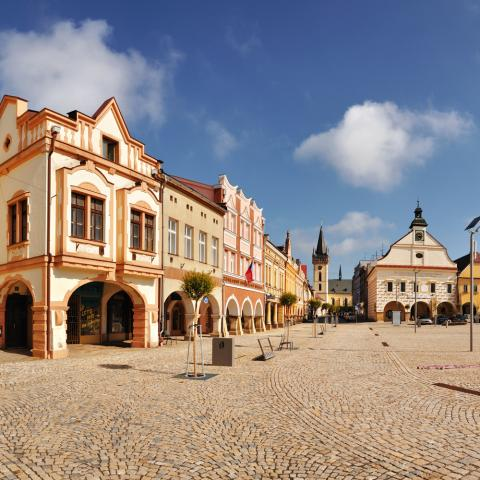
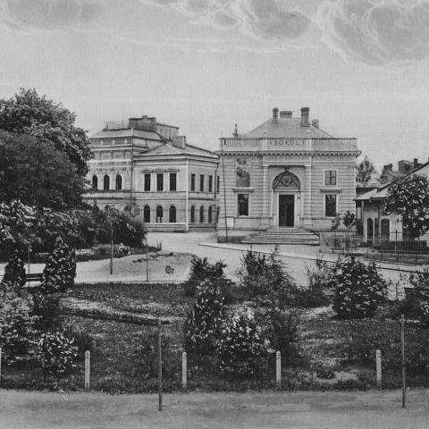
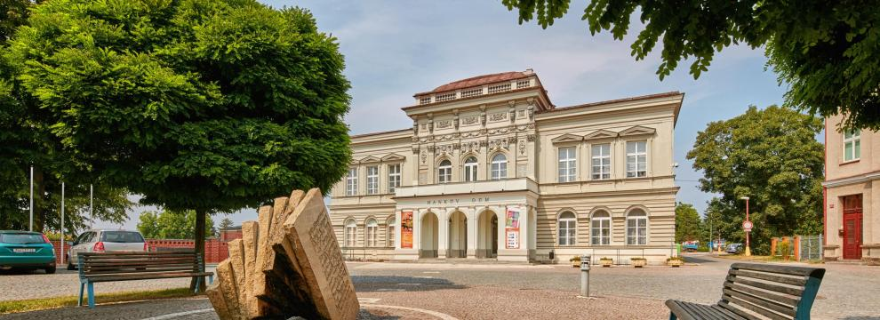
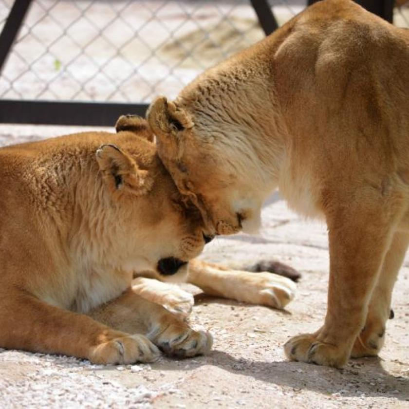
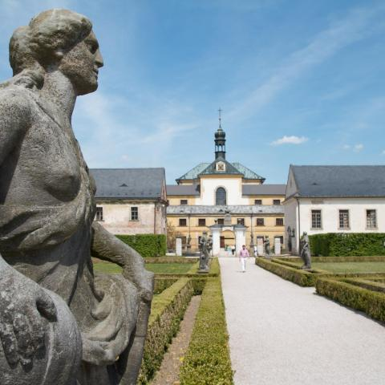
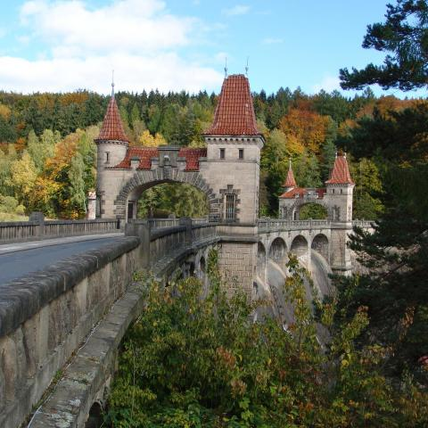
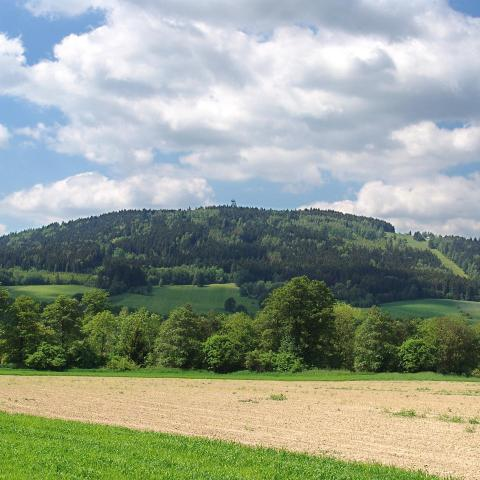

Úvod
Starobylé věnné město českých královen, Dvůr Králové nad Labem, se rozprostírá v malebném údolí horního toku řeky Labe. Město přímo vybízí ke strávení aktivně-odpočinkové dovolené. Čeká na vás objevování překrásné přírody, řada uměleckých památek, sportovní i kulturní vyžití, a to v jakémkoliv ročním období.
Ve městě je několik možností ubytování, většinou v docházkové vzdálenosti prakticky kamkoliv. To zaručuje snadnou dostupnost historických, kulturních i sportovních atraktivit v centru města, tak i možnost návštěvy zdejších restaurací, kaváren a cukráren.
Procházku městem spojte s výšlapem na věž kostela sv. Jana Křtitele. Ano, správně. Zrovna tady Václav Hanka našel Rukopis královédvorský. Prý nejstarší česky psaný text se 14 písněmi ze 13. století, který zahýbal českými dějinami. Máte rádi rozhled? Jistě se vám bude líbit úžasná vyhlídka na město a jeho okolí.
Historie
První písemná zmínka o Dvoru je z roku 1270. V latinsky psaném listu ze dne 27. července, vydaném v Miletíně ohledně sporu mezi faráři Hořic a Miletína o farní právo, je mezi svědky uveden královédvorský plebán "Gottfridus de Curia". S latinským označením Dvora jako Curia se setkáváme i v následujících letech. Objevuje se však také německé označení "Hof", prvně v roce 1316. Český název "Dwuor" je doložen až v roce 1421. Toto pojmenování souvisí pravděpodobně s knížecím dvorcem, který tu vznikl, zřejmě v blízkosti kostela. S postupující kolonizací, která byla zčásti německá, se původní tržní osada začala rozrůstat. Od které doby Dvůr patřil králi, bohužel nevíme, stejně jako to, kdy došlo k povýšení osady na město.
Ve 14. století byl Dvůr již opevněn a jeho osudy jsou spojeny s tzv. trutnovským manstvím, které bylo několikrát zastaveno. Do přímého držení krále se Dvůr vrátil v roce 1392, do rukou Václava IV. Ten město zapsal své manželce Žofii Bavorské. Město se tak stalo královským věnným městem. Stalo se tak asi před korunovací Žofie roku 1400. Od té doby přibyl k označení města Dvůr přídomek Králové.
Dne 16. září 1817 "objevil" český spisovatel, básník, jazykovědec, literární historik, knihovník a vysokoškolský pedagog Václav Hanka v klenuté kobce věže kostela sv. Jana Křtitele tzv. Rukopis královédvorský – nejstarší česky psaný text se 14 písněmi ze 13. století. Přestože se ukázalo, že se jedná s největší pravděpodobností o padělek, který vytvořil Václav Hanka společně s přítelem, básníkem Josefem Lindou, a zřejmě i s dalšími, dokument významně ovlivnil atmosféru národního obrození a zapsal město výrazně do českých dějin. V současnosti je Rukopis královédvorský uložen v Knihovně Národního muzea v Praze.
Současnost
 Chcete okusit Vánoce v létě? I to výlet do Dvora Králové nad Labem nabízí. Nesmíte tedy vynechat návštěvu městského muzea, kde budete mít možnost zhlédnout stálou expozici vánočních ozdob. Zjistíte, jak se výroba ozdob vyvíjela, projdete si celý cyklus od foukání a smáčení, přes zdobení a záponkování až po balení do krabic. Vše zažijete hravou formou, interaktivní výstava zabaví nejen vás, ale i vaše děti. Kromě toho se v muzeu můžete také vydat po stopách minulosti našeho města a seznámit se nejen s nejvýznamnějšími událostmi dob dávno zapomenutých, ale také s historií tradice textilního průmyslu na Královédvorsku.
Zasloužený odpočinek, klid a atmosféru 30. let minulého století najdete na dvorském Tyršově koupališti, které se pyšní dvěma velkými bazény a dětským brouzdalištěm. Vaše děti budou určitě nadšené, až uvidí dětské hřiště, hřiště na volejbal a plážový volejbal, basketbal, nohejbal, stolní tenis či minigolf přímo v areálu koupaliště. Stín vám poskytnou vzrostlé stromy i posezení v restauraci s širokou nabídkou jídla a pití. Celý den vám uteče jako voda, nudit se tu rozhodně nebudete.
Chcete si užít perfektní den mezi africkými zvířaty, projet se vlastním vozem nebo v upraveném safaribusu jedinečným Africkým safari mezi volně vypuštěnými zebrami, antilopami nebo buvoly a ptáky, navštívit expozici jedovatých hadů černého kontinentu nebo se vyřádit s dětmi v lanovém parku? Zastavte se v ZOO Dvůr Králové, v zahradě s více než šedesátiletou historií, která patří k nejvýznamnějším chovatelům afrických zvířat ve světě. V letošní letní sezoně se návštěvníci mohou těšit ještě na další unikát – Lví safari, které se otevře během července. Pro ty, co chtějí zažít jedinečné prázdniny, nabízí zoo ubytování v Safari hotelu nebo Safari kempu, které jsou součástí rozsáhlého areálu zahrady. Na gastronomické zážitky se těšte v Restauraci U Lemura.
Cyklotrasa, kam se podívám! To by mohl být slogan vystihující Dvůr Králové nad Labem. Město a jeho okolí jsou doslova protkané cyklotrasami, které přímo vybízejí k výletům na kole. Vydejte se proti proudu řeky Labe, kde najdete patrně nejkrásnější přehradu v Čechách a národní kulturní památku, Les Království. Je obklopena malebnými lesy a představuje příjemné místo k relaxaci, ale i poznání. Odtud je to už jen kousek na nejvyšší místní vrcholek Zvičina. Krkonoše budete mít jako na dlani a sledování západu slunce bude skutečnou tečkou za příjemně stráveným dnem.
Okolí
Kuks
Kuks je nejrozsáhlejší barokní komplex v Čechách. V roce 1995 byl Hospital Kuks prohlášen národní kulturní památkou.
Přehrada
Několik kilometrů od Dvora Králové nad Labem, proti proudu řeky Labe, se nachází přehrada Les Království, jedna z nejkrásnějších přehrad v Čechách.
Zvičina
Zvičina je nejvyšším kopcem 17 km dlouhého horského hřbetu. O 300 m převyšuje Dvůr Králové nad Labem a o 330 m Miletínskou kotlinu.